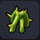 |
작은 가시나무 | 가시가 돋힌 식물의 작은 줄기 ■ 만지면 대미지를 입는다 |
질퍽질퍽섬 | ／ |
| 부들 | 봉 모양의 이삭이 자라는 식물 | 질퍽질퍽섬 | ／ | |
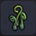 |
빙글빙글 풀 | 오랜 시간에 걸쳐 거대하게 자란 고비 | 질퍽질퍽섬 - 정글 | ／ |
| 야광초 | 항상 은은한 빛을 내뿜는 신비한 식물 | 질퍽질퍽섬 - 정글 | ／ | |
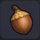 |
도토리 | 거대한 나무에 가끔 열리는 나무 열매 | 질퍽질퍽섬 - 정글 | ／ |
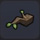 |
큰 나무의 가지 | 거대한 나무에 돋아난 가지 | 질퍽질퍽섬 - 정글 | ／ |
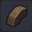 |
큰 나무 뿌리 | 거대한 나무의 뿌리 | 질퍽질퍽섬 - 정글 | ／ |
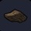 |
큰 나무의 뾰족한 뿌리 | 거대한 나무 뿌리의 끄트머리 부분 | 질퍽질퍽섬 - 정글 | ／ |
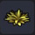 |
사막초 | 모래땅에 자라있는 말라버린 풀 | 번쩍번쩍섬 | ／ |
| 솜털 풀 | 열매에서 푹신푹신한 솜을 뽑을 수 있는 가는 식물 | 오카무르섬 상층 호수 근처 | ／ | |
| 억새 | 시들어 버린 억새 | 뒹굴뒹굴섬 | ／ | |
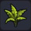 |
큰 고사리풀 | 크고 뻣뻣한 잎을 지닌 식물 | 뒹굴뒹굴섬 | ／ |
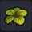 |
정글풀 | 비가 많고 나무들이 밀집한 곳에서 자라는 풀 | 첨벙첨벙섬 | ／ |
| 라플레시아 | 강렬한 냄새를 풍기는 거대한 식물 | 어둑어둑섬 | ／ | |
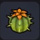 |
꽃 선인장 | 수분을 풍부하게 머금은 가시가 돋힌 식물 | 뒹굴뒹굴섬 | ／ |
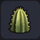 |
기둥 선인장의 머리 | 가시가 돋힌 길다란 식물의 끄트머리 부분 | 뒹굴뒹굴섬 | ／ |
| 기둥 선인장 | 가시가 돋힌 길다란 식물의 줄기 부분 | 뒹굴뒹굴섬 | ／ | |
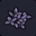 |
보라색 풀 | 독이 많은 늪지대 곁에서 자라는 풀 | 어둑어둑섬 | ／ |
| 파란 성게풀 | 성게처럼 가늘게 가시가 돋힌 풀 | 어둑어둑섬 | ／ | |
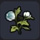 |
백설풀 | 눈처럼 창백하고 서늘한 꽃 | 꽁꽁섬 | ／ |
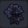 |
저주잎 덤불 | 주술에 쓰이는 거무스름한 식물 | 어둑어둑섬 | ／ |
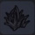 |
그림자풀 | 그림자처럼 새까만 식물 | 어둑어둑섬 | ／ |
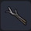 |
그을린 가지 | 불에 타 검게 그을린 나뭇가지 | 꽁꽁섬 | ／ |
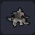 |
그을린 풀 | 불에 타 검게 그을린 풀 | 꽁꽁섬 | ／ |
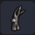 |
그을린 나무 | 불에 타 검게 그을린 | 꽁꽁섬 | ／ |
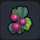 |
담쟁이덩굴 열매 | 가끔 담쟁이덩굴에 열리는 열매 ■ 벽에 걸면 1단 위까지 오를 수 있다 |
뒹굴뒹굴섬 | ／ |
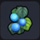 |
빛나는 담쟁이덩굴 열매 | 아주 가끔 담쟁이덩굴에 열리는 보기 드문 열매 ■ 벽에 걸면 1단 위까지 오를 수 있다 |
뒹굴뒹굴섬 | ／ |
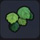 |
덩굴 장미 잎 | 벽에 들러붙은 장미 잎 | 문부르크섬 론달키아 질퍽질퍽섬의 수국 주변 |
／ |
| 덩굴 장미 | 벽에 들러붙은 장미 ■ 색 변경 가능 |
문부르크섬 론달키아 출렁출렁섬 |
／ | |
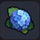 |
수국 | 공 모양으로 흐드러지게 꽃을 피우는 수국 | 질퍽질퍽섬 | ／ |
| 글라디올러스 | 선명한 빨간색의 작은 꽃 | 뒹굴뒹굴섬 | ／ | |
| 해바라기 | 태양을 향해 피는 크고 노란 꽃 | 뒹굴뒹굴섬 | ／ | |
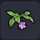 |
등꽃 - 상 | 아름다운 등나무의 뿌리 부분 | 출렁출렁섬 | ／ |
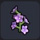 |
등꽃 - 중 | 아름다운 등나무의 꽃 부분 | 출렁출렁섬 | ／ |
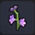 |
등꽃 - 하 | 아름다운 등나무의 끄트머리 부분 | 출렁출렁섬 | ／ |
| 부채야자 | 부채꼴의 커다란 잎 | 뒹굴뒹굴섬 - 오아시스 주변 | ／ | |
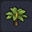 |
소철 | 열대 지방에서 자라는 뾰족뾰족한 잎을 지닌 나무 | 첨벙첨벙섬 | ／ |
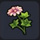 |
신비의 꽃 | 신비로운 꽃이 피는 식물 | 출렁출렁섬 | ／ |
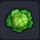 |
양배추 | 녹색 잎으로 뒤덮인 둥근 야채 | 밭에서 재배 주렁주렁섬 |
／ |
| 빨간색 양배추 | 빨간색으로 자란 보기 드문 양배추 | 개척지 래시피 10종 작물 재배 완료 후 낮은확률로 밭에서 등장 | ／ | |
| 밀 | 얇은 껍질이 붙은 작은 열매가 자라는 식물 | 밭에서 재배 질퍽질퍽섬 |
／ | |
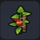 |
토마토 | 새콤한 맛이 나는 빨갛고 둥근 야채 | 작물 지지대가 있는 밭에서 재배 주렁주렁섬 |
／ |
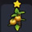 |
깜짝 토마토 | 탐스러운 빨간색으로 익은 보기 드문 거대 토마토 | 개척지 래시피 10종 작물 재배 완료 후 낮은확률로 밭에서 등장 | ／ |
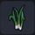 |
파 | 끝부분이 녹색인 하얗고 길쭉한 작물 | 밭에서 재배 꽁꽁섬 |
／ |
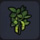 |
콩 | 꼬투리에 들어 있는 녹색의 작은 열매의 작물 | 밭에서 재배 출렁출렁섬 |
／ |
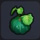 |
호박 | 단단한 녹색 껍질로 뒤덮인 식물 | 밭에서 재배 질퍽질퍽섬 |
／ |
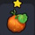 |
늙은 호박 | 엄청 거대하게 자란 보기 드문 호박 | 개척지 래시피 10종 작물 재배 완료 후 낮은확률로 밭에서 등장 | ／ |
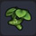 |
고추냉이 | 독특한 매운맛이 나는 녹색 식물 | 논에서 재배 출렁출렁섬 |
／ |
| 실버 고추냉이 | 은색으로 빛나는 보기 드문 고추냉이 | 개척지 래시피 10종 작물 재배 완료 후 낮은확률로 밭에서 등장 | ／ | |
| 수수 | 찌부러뜨리면 단맛이 나는 길쭉한 식물 | 논에서 재배 주렁주렁섬 |
／ | |
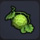 |
멜론 | 그물망 문양의 달콤한 녹색 과일 | 밭에서 재배 출렁출렁섬 |
／ |
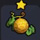 |
샤이니 멜론 | 눈부시게 빛나는 보기 드문 멜론 | 개척지 래시피 10종 작물 재배 완료 후 낮은확률로 밭에서 등장 | ／ |
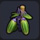 |
박가지 | 길고 불룩하게 부푼 보라색 야채 | 작물 지지대가 있는 밭에서 재배 질퍽질퍽섬 |
／ |
| 고추 | 얼얼하게 매운 열매가 맺는 식물 | 밭에서 재배 뒹굴뒹굴섬 |
／ | |
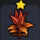 |
파이어 고추 | 매운맛이 몇 배나 강해진 보기 드문 고추 | 개척지 래시피 10종 작물 재배 완료 후 낮은확률로 밭에서 등장 | ／ |
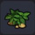 |
감자 | 추위에 강하고 울퉁불퉁한 황백색 열매가 열리는 작물 | 밭에서 재배 꽁꽁섬 |
／ |
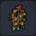 |
커피콩 | 둥그랗고 향기로운 작은 빨간 열매가 열리는 작물 | 밭에서 재배 번쩍번쩍섬 |
／ |
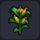 |
옥수수 | 노란색 낱알이 가득 찬 열매가 열리는 작물 | 밭에서 재배 뒹굴뒹굴섬 |
／ |
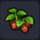 |
딸기 | 빨갛고 달콤한 작은 열매가 열리는 작물 | 밭에서 재배 주렁주렁섬 |
／ |
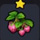 |
달달 딸기 | 달콤하기 그지없는 보기 드문 딸기 | 개척지 래시피 10종 작물 재배 완료 후 낮은확률로 밭에서 등장 | ／ |
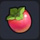 |
복숭단감 | 참나무 근처에 떨어진 복숭아 빛깔의 열매 | 질퍽질퍽섬 | ／ |
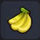 |
바나나 | 나무에서 떨어진 바나나 열매 | 뒹굴뒹굴섬 - 오아시스 주변 | ／ |
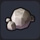 |
둥근 돌 | 둥글둥글한 중간 크기의 돌 | 출렁출렁섬 | ／ |
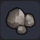 |
작은 돌 | 동굴 등에 떨어져 있는 작은 돌 | 번쩍번쩍섬 | ／ |
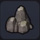 |
큰 돌 | 동굴 등에 있는 뾰족하게 모가 난 대형 돌 | 번쩍번쩍섬 | ／ |
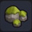 |
이끼 낀 작은 돌 | 이끼가 자란 둥근돌 | 질퍽질퍽섬 | ／ |
| 이끼 낀 큰 돌 | 이끼가 자란 큰 돌 | 질퍽질퍽섬 | ／ | |
| 불타는 돌 | 고온으로 달궈져 불타는 듯이 뜨거운 돌 | 번쩍번쩍섬 | ／ | |
| 뾰족한 돌기둥 | 자연스럽게 깎여 뾰족한 모양이 된 작은 바위 | 뒹굴뒹굴섬 | ／ | |
| 뾰족한 큰 돌기둥 | 자연스럽게 깎여 뾰족한 모양이 된 바위 | 뒹굴뒹굴섬 | ／ | |
| 뾰족뾰족 바위 | 뾰족뾰족한 작은 바위 | 어둑어둑섬 | ／ | |
| 큰 뾰족뾰족 바위 | 뾰족뾰족한 큰 바위 | 어둑어둑섬 | ／ | |
| 마력의 수정암 | 마력을 띤 수정의 원석 | 꽁꽁섬 | ／ | |
| 빨간 기둥바위 | 높게 쌓인 빨간 기둥 | 번쩍번쩍섬 | ／ | |
| 물보라 바위 | 폭포수를 막아 물보라를 일으키는 돌 ※ 빌더 하트 50 교환 (잠금 해제) |
출렁출렁섬 | 그루터기 작업대 | |
| 옥석 담 | 물을 막을 수 있는 작은 돌 ※ 빌더 하트 20 교환 (잠금 해제) |
꽁꽁섬 | 그루터기 작업대 | |
| 대옥석 담 | 물을 막을 수 있는 큰 돌 ※ 빌더 하트 50 교환 (잠금 해제) |
꽁꽁섬 | 그루터기 작업대 | |
| 깨진 적암 | 공중을 부유하는 수상한 바위 더미 | 으스스섬 | ／ | |
| 버섯 | 어두운 곳에서 나무나 돌 옆에 자라는 버섯 | 뒹굴뒹굴섬 | ／ | |
| 하늘색 느타리 | 어둡고 좁은 곳을 좋아하는 하늘색 느타리 | 뒹굴뒹굴섬 | ／ | |
| 씁쓸버섯 | 색은 예쁜 분홍색이지만 쓴맛이 강한 버섯 | 번쩍번쩍섬 | ／ | |
| 거대 버섯 - 갓 | 거대한 버섯의 머리 부분 | 뒹굴뒹굴섬 | ／ | |
| 특대 버섯 - 갓 | 거대한 버섯의 갓 부분 | 뒹굴뒹굴섬 | ／ | |
| 거대 버섯 - 다리 | 거대한 버섯의 다리 부분 | 뒹굴뒹굴섬 | ／ | |
| 분홍조개 | 그대로는 먹을 수 없는 귀여운 분홍색 조개 | 첨벙첨벙섬 바다 / 해변 |
／ | |
| 불가사리 | 해변에 서식하는 별 모양 생물 | 첨벙첨벙섬 바다 / 해변 |
／ | |
| 고동 | 마린 슬라임이 쓰고 있던 껍데기 | 첨벙첨벙섬 바다 / 해변 |
／ | |
| 해변의 해초 | 해변에 자라난 작은 해초 | 첨벙첨벙섬 바다 / 해변 |
／ | |
| 해변의 해초 - 대 | 해변에 자라난 큰 해초 | 첨벙첨벙섬 바다 / 해변 |
／ | |
| 유목 | 어딘가에서 흘러들어온 작은 나무 | 첨벙첨벙섬 바다 / 해변 |
／ |